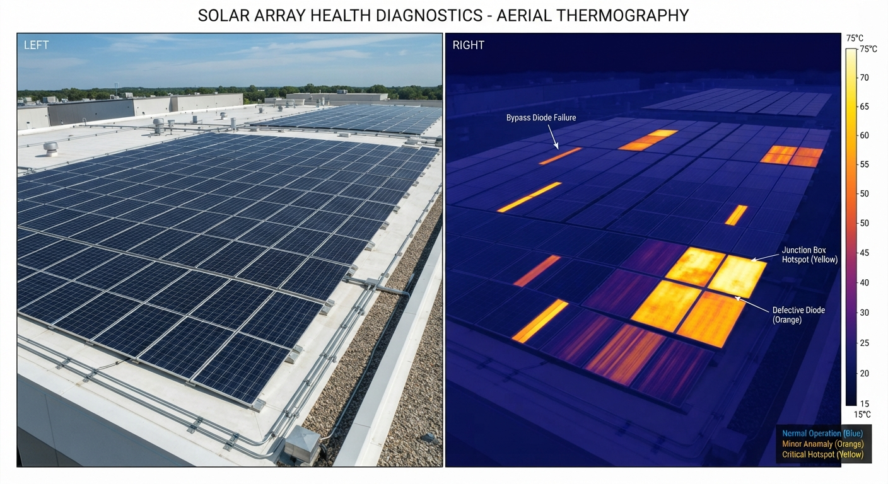
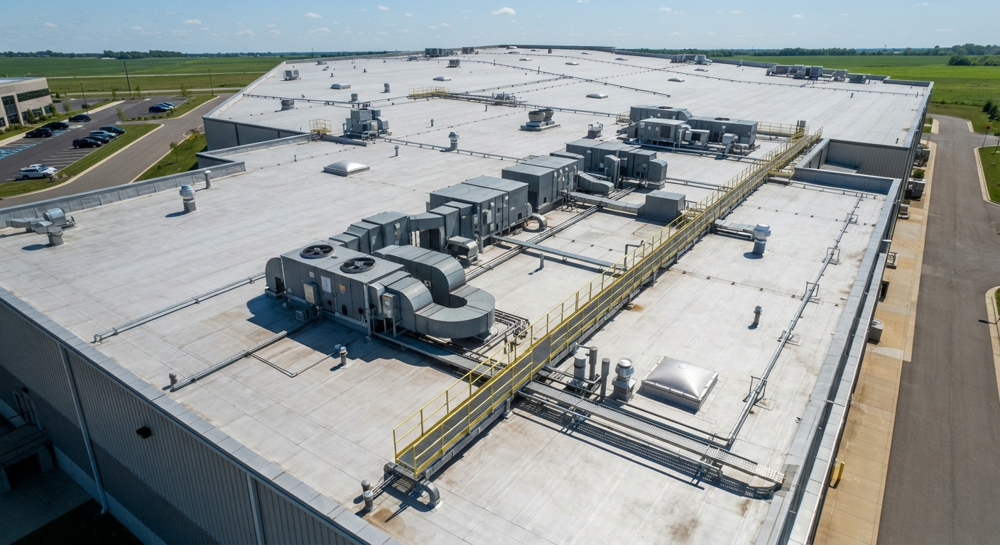

Our service
Thermal inspection services
Aerial thermal inspections for commercial roofs, solar arrays and distribution infrastructure: one flight, clear data to plan your next steps.
Heat, turned into insight
Radiometric thermal capture detects hotspots and abnormal heat patterns across roofs, solar arrays and electrical assets. Every finding is geolocated, paired with a visual image and prioritized for follow-up investigation.
Key detection capabilities
- Abnormal heating at connectors and splices
- Phase patterns consistent with load imbalance
- Thermal anomalies in modules and strings
- Moisture and insulation signatures in roofs
- Early signs of component degradation
- Repeatable baselines for trend analysis
Solar array — aerial thermography


Illustrative example
Distribution line inspection
Connections under load heat up when they loosen or corrode. Comparing similar components side by side shows which one is running hotter, with no climbing and no shutdown.

What we look for
- Pole-by-pole locations
- Thermal + RGB pairs
- Phase comparisons
Commercial roof inspection
High-resolution surveys for commercial and industrial sites, supporting maintenance and insurance.

What we look for
- Report in 48 h
- Thermal + RGB pairs
- GPS-tagged findings
- Estimated area (m²)
Solar array inspection
A healthy panel heats evenly. Hot cells, strips or whole panels stand out in thermal and help your O&M team decide where to look first.
What we look for
- Panel-level locations
- Thermal + RGB pairs
- Severity ranking
Roof areas beneath panels can't be assessed thermally.
Technical reports your teams can act on
Clear, structured reports that turn aerial data into maintenance priorities. Every finding is GPS-tagged, and roofing reports are delivered in 48 hours.
- Findings catalog with severity ratings
- Annotated imagery (RGB + thermal)
- PDF report with GPS coordinates for every finding
- Summary with recommended follow-up
Not sure which service fits?
Tell us what you operate — we'll recommend the right inspection and share a sample report.